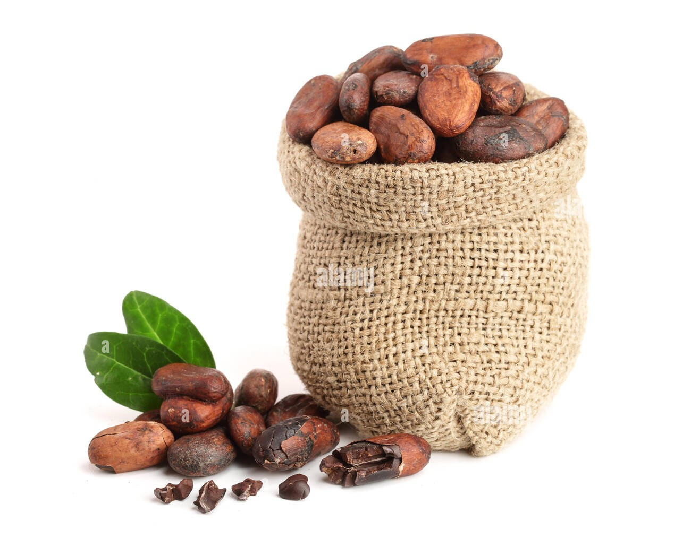

Transformation du cacao : Fèves de cacao

Introduction
Nos fèves de cacao sont rigoureusement sélectionnées et issues de coopératives locales camerounaises. Elles représentent le point de départ de toute la chaîne de transformation du cacao, qu'il s'agisse de poudre, de beurre ou d'huile. Le respect de chaque étape est essentiel pour garantir la qualité du produit final.
Processus de transformation
- Récolte : Les cabosses sont cueillies manuellement à maturité.
- Ouverture des cabosses : Extraction des fèves fraîches à la main.
- Fermentation : Pendant 5 à 7 jours dans des caisses en bois pour développer les arômes du cacao.
- Séchage : Les fèves fermentées sont séchées au soleil pendant 1 à 2 semaines.
- Tri manuel : Retrait des fèves défectueuses ou cassées.
- Torréfaction (optionnelle) : Certaines fèves sont légèrement torréfiées selon les besoins des clients.
- Conditionnement : Mise en sacs de jute (100g, 250g, 1kg, etc.) avec étiquetage et stockage dans des conditions saines.
Utilisations
- Infusions bien-être
- Transformation artisanale en chocolat
- Grignotage sain et naturel
- Masques et soins cosmétiques
Nos fèves de cacao sont 100% naturelles, non traitées et riches en arômes. Elles sont adaptées à un usage alimentaire ou cosmétique.